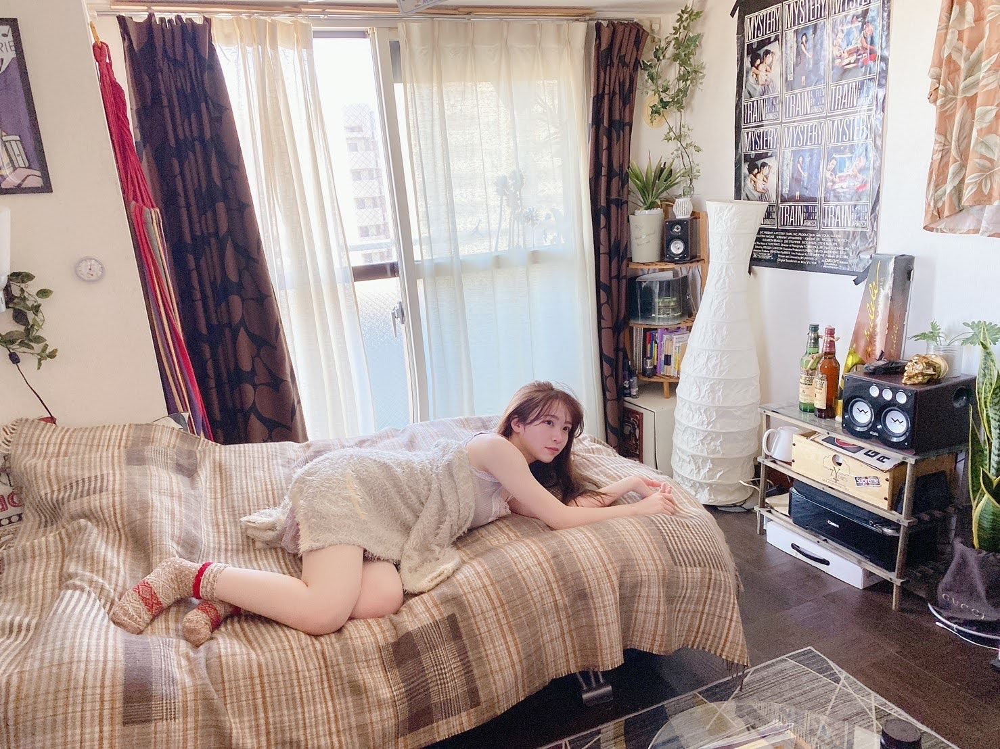
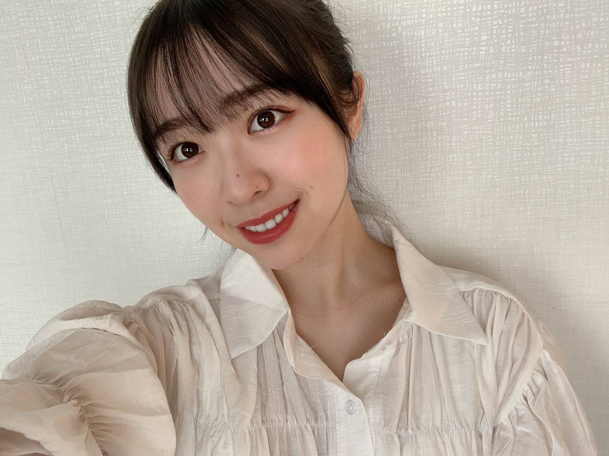
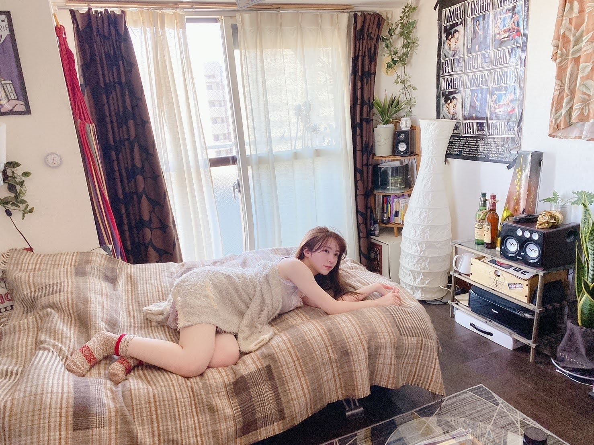
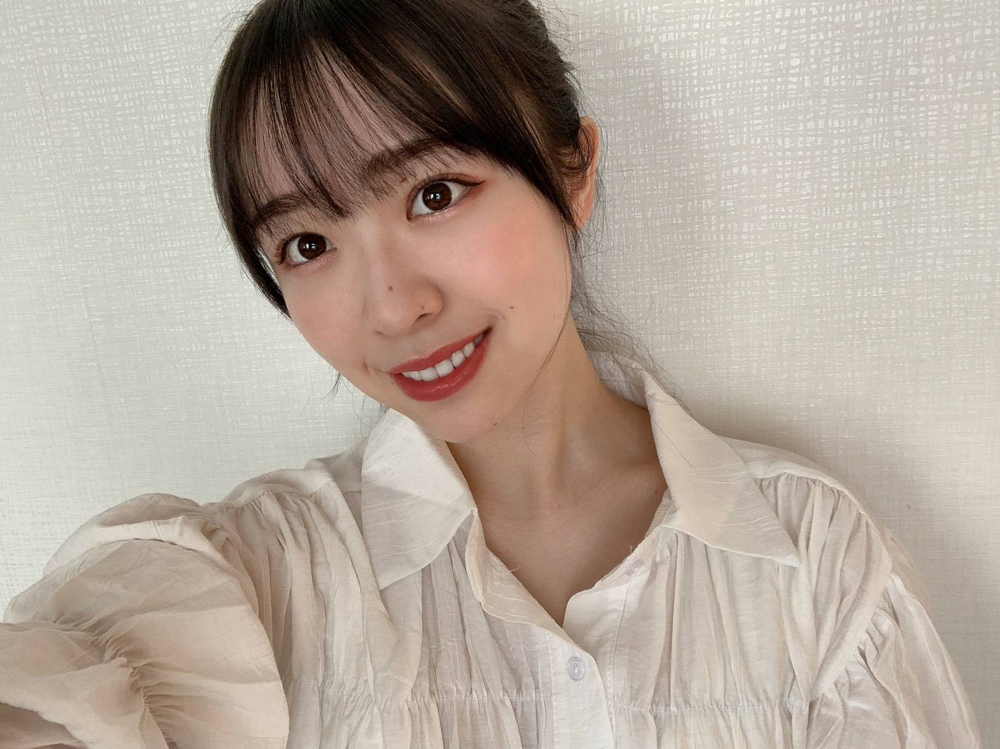

2021/0317Wed草木と空
Instagram開設致しました！
ブログやモバメとはまた違う写真を
上げていきたいと思っています。
私の大好きな世界観で。
ブログやモバメ等は引き続き
自撮りなどを載せていきたいと
思っております！
女の子のファンの皆様からは
メイクのお話も聞きたいと意見をくれたので
それもInstagramの方で紹介出来たら
いいなあと思っております。

BUBKA発売中です！
9th birthday live
遅ればせながら、
ありがとうございました！
個人的にはセットリストも含めみんなが
一人一人輝けるライブだったのではないかな
と思っています。
普段の全体ライブというと
どうしても出る曲数に個人差が出てしまったり
するのですが、今回は最初の
インフルエンサーとシンクロニシティの
ポジションをバラバラに振り分けて
踊れたことが凄く良かったのかなあと
思います！
アナスターシャのイントロを聴いた時
いつも聴いているはずなのに
広い会場では初めてだったからか
響き渡る音が鮮明に聞こえて
それが凄く胸に突き刺さって
鳥肌が立って泣きそうになりました。
やはり良い曲だなあ
3月28日には2期生ライブ
3月29日には1期生ライブがあります。
皆様、ご都合良ければ
是非見てくださると嬉しいです(^^)

みり愛
Instagram開設致しました！
ブログやモバメとはまた違う写真を
上げていきたいと思っています。
私の大好きな世界観で。
ブログやモバメ等は引き続き
自撮りなどを載せていきたいと
思っております！
女の子のファンの皆様からは
メイクのお話も聞きたいと意見をくれたので
それもInstagramの方で紹介出来たら
いいなあと思っております。

BUBKA発売中です！
9th birthday live
遅ればせながら、
ありがとうございました！
個人的にはセットリストも含めみんなが
一人一人輝けるライブだったのではないかな
と思っています。
普段の全体ライブというと
どうしても出る曲数に個人差が出てしまったり
するのですが、今回は最初の
インフルエンサーとシンクロニシティの
ポジションをバラバラに振り分けて
踊れたことが凄く良かったのかなあと
思います！
アナスターシャのイントロを聴いた時
いつも聴いているはずなのに
広い会場では初めてだったからか
響き渡る音が鮮明に聞こえて
それが凄く胸に突き刺さって
鳥肌が立って泣きそうになりました。
やはり良い曲だなあ
3月28日には2期生ライブ
3月29日には1期生ライブがあります。
皆様、ご都合良ければ
是非見てくださると嬉しいです(^^)

みり愛
2021/03/17 18:54


コメント(615)
大掃除おつかれ様〜\٩( 'ω' )و /
宗muneもいろいろ捨てたりして部屋の中を日頃片付けてるよーん。
ケガすんなよ〜\٩( 'ω' )و /
じゃね〜♪
今日は仕事から帰ってきて晩ご飯食べ終わって、録画してあった「オトラクション」を見てるよぉ(^o^)
乃木坂チーム頑張れ～
みり愛ちゃん、三つ編み＆エプロン姿、めっちゃ可愛いです～(*^o^*)
新しい部屋着はお気に入りが見つかったかな？
みり愛おはよ〜
GWの休みに入ってるよ〜
今年は何して過ごそうか
最近見たい映画とかもないんだよなー
散歩でもしようかな
またコメントするねー
あんパンをあむあむあむ[壁]ｴ＿)
ポジピース♡渡辺殿‼かわいいんごうれぴようれぴーぽーo(￣◎￣)o ﾊﾞﾌﾞｩ
ワッフル?オムライス？うまぺろんぬそうだぷーq(T▽Tq)(pT▽T)p
ほんじつもチートデザートパワー100万馬力でばいころまる( ;-(ｴ)-)ゞｸﾏ
おはよう
きっと
書いてくれた言葉の裏には
その何十倍もの語られなかった
言葉があるんですよね
ありがとう、噛みしめます
ヤバいです、、、
5月に入ったばかりなのに
口座残高が1万円を下回りました
こんなわたくしに
手軽に作れてお金のかからない
献立を教えてください〜
お願いします(｡-人-｡)
と、言うと、決まって女子はこう言います。
えっ、じゃあ普段は？化粧にどれだけ時間と労力かけてると思ってんの！
と。
どっちもかわいいねぇ
と、言うと、決まって女子はこう言います。
男なら、どっちか白黒つけてみなさい！
と。
もーぅ、八方塞がりじゃあないかー
幼なじみのお友達とお出かけした写真、楽しそうでいいねぇ～(^o^)
この時のご飯＆デザートは美味しかったかな？
ヒーリングの音楽聴いて良く眠れたみたいで良かったねぇ(^-^)
みり愛ちゃん！すっぴんもめっちゃ可愛いです～(*^o^*)ありがとう！まさに天使～
私事ながら、さっき散歩がてら飲みものを買いに行ったのですが、その帰り道。
自転車に乗った男性が、何か熱唱しながら、颯爽と通り過ぎて行きましてね。彼は今夜、ぐっすりと眠れるのでしょう。
イジるつもりは無い。笑
昨日も可愛くてありがとう
今日も可愛いね♪
明日も可愛いんだろうな٩(ˊᗜˋ*)و
海鮮丼系によくあるねぎとろに温泉卵や納豆オクラとかねばねば系混ぜるよくあるやつ
を出前で食べてたんだけども出前だとプラ容器でその場で載せるやつね
その前も同じのを食べてて…というのも前回半分以上食べ進めてあれ？この容器なんだろ…
あああ…温泉卵…しまったああ入れ忘れ…ていうか食べて気付け自分…
もったいないからしょうがなく残り少ないご飯に温泉卵を入れたら
まあ見事に温泉卵ご飯と化しまさに後味がわるいというか海鮮感ゼロゴールを決めてしまったので
これを今回こそ取り戻すぞというこれ以上ない低いハードルを越えようとしていた…という
どうでもいい瞬間だったのでなかなか今を書くのは難しいねと思いました、うん
忘れた頃にまたやりそうで怖いというかむしろ入れ忘れて今度こそ味で気づきたい感
というバカ舌を披露した後になんですが本当にすっぴん？というか可愛すぎと思った～というご報告でした
メールの集計もなんというか他で色々話してるのは気づいてて…
塗り絵作っておいて塗るなも変な話だけどねーどどめ色で塗らんでもーという
思いというか毎日報告してくれてる人にすらわるいような
じゃあやめよー塗り絵つくらないーのも変な話だろうし性善説的な展開を祈るばかり
という集計人としての思いを書いてみた次第です
『ごめんねFingers crossed』
どんな曲なのかな？？
ワクワクドキドキ♪
ごめんねってことばと
幸運を祈るってことば
両方足すとどんな化学反応が！？
フレンチトーストをあむあむあむ[壁]ｴ＿)
ヒーリングミュージック寝るんご渡辺殿‼キュンですわおほほほほ(o^∀^)
おでこったん♡渡辺殿‼かわいいんごうれぴようれぴーぽーo(￣◎￣)o ﾊﾞﾌﾞｩ
ほんじつもときめきときめきレボリューション‼パワー100万馬力でばいころまる( ;-(ｴ)-)ゞｸﾏ
お肌がトゥルトゥルですね。笑
今日は天気が最高だし気持ちいい。
5月もよろしく。
じゃあね。
みり愛ちゃん今日も1日お疲れ様！
ゴールデンウィークの休みもあと2日になってしまった〜
みり愛は7日間とかお休みがあったら、何して過ごすのかな？？
今日は久しぶりにキャッチボールしたよ
ほんとだったら、この時期に草野球の試合がある予定だったけど、中止になっちゃったんだよね〜
また草野球できる日がくるといいな
今日はみり愛とまあやの755を見て平和だなーとホッコリしたよ笑
またコメントするねー
全体と個人の2つの記念日があるのは2期生ならではですね！
8周年と言えば、関係ないですが個人的に8thのBlu-rayをようやく見始めました 笑
4日間全参戦できたので、所有して満足パターンに陥ってましたが、GWと言うことで重い腰を上げたところ、なんて言うんでしょう、無数のサイリウムとコールの盛り上がり、巨大会場ならではの迫力の大音量と別次元の世界が広がってましたね
今のライブ形態に慣れてしまった故もありますが、ライブってこうだったな、という気持ちです
そして何より配信だと演者側は見る側の比にならないほど、大きな違いを感じているのかな、と思いました
見る側についてはリアリティはライブ会場には及びませんけど、完成されたステージを見ている視点に大きな違いはないんですが、演者側はステージの向こうが機材やスタッフさんのみのいわゆる暗闇の空間。花道で手を振ることもないし、観客のレスポンスも無いんですよね
気持ちの切り替えが大変だったのかな、と想像してます
アンダラ2020で有観客に涙したメンバーがいた気持ち、コロナ期直前の8thを見ることでより伝わりました！
そして未央奈さんフォトブックもようやく拝見しました！
少し昔に聞いたことはありましたが、やはりみり愛さんはモード系の服装が好みなんですね～
やっぱり体幹が強いのか、背筋がしっかりして綺麗なので、格好いいパンツスタイルやモード系の服も合ってると思います！
周りに合わせて自身の負担にならないよう、推しには好きな服を自由に着ていて欲しいです！
ちなみにフォトブックを読んでいてふと気付きましたが、未央奈さんの”みおちゃん”呼びは絢音さん特許だった気がしましたが、2期生ライブ少し前からですかね、二期生は”みおちゃん”呼びに変わっていたように思います
何かキッカケがあったように感じましたが、また後日談などで語ってくれることを楽しみにしています！
今日も一日がんばルビィ
合ってますか？
モバメありがとう！！
セブンくじおめでとう！！
欲しいものが当たった時、めっちゃ嬉しいよね( ＾∀＾)
分かるわ～( ＾∀＾)
ありがとう！
急にお礼言いたくなった。笑
おはようっ！
午後から手術です
頑張るっ！
パワー送ってよ
関東の人はマクドナルドのことを
｢マック｣
関西の人は
｢マクド｣って
言うじゃないですか？
うちの田舎では
マクドナルドは
｢マクドナルド｣です
ミスタードーナツも
｢ミスタードーナツ｣ですね
やっぱ、都会の人は
せっかちなので略したがるんですかね？
はぁぁ┐(´-｀)┌ﾔﾚﾔﾚ
あっ！でも
モスバーガーは
｢モス｣と略します。。。
忘れられない
やっぱそのままがイイ
生涯忘れることはないでしょう
アンダーライブ2021開催決定おめでとう
＼(^^)／
こうやってまたみり愛ちゃんたちのライブが観られる日がくるなんて本当に嬉しい！
観たい演出とかユニットとか色々あるけど、メンバーのパフォーマンスにはまたさらに圧倒されるんだろうなあ(^^)！
ヒーリングミュージックかー。
波の音とか聴くとリラックス出来るかな？
そういえば実際のだけど雨音聴くのめっちゃ好きだよ！
ザーザーもしとしともぽちゃぽちゃも
どれも好き(^^)。
みり愛ちゃんはどんな雨音が好きなんだろうか？
すっぴんお写真ありがとう！
すっぴんみり愛ちゃんも可愛くて癒される
そしてお肌が綺麗ー(^^)。
ブログありがとう！！
自分は掛け布団を少し薄めにして調整してるよ。
まだ夜は寒いから、風邪ひかないように気をつけてや(。>д<)
良く寝て免疫上げよう( ＾∀＾)
モバメ、写真ありがとうです。
癒されてます。
連休入って、洗車、買い物、掃除、
少し仕事してって感じですね。
昼間は暑いぐらいですね。
休みということで、買い物の帰りに
ちょっと歩いたら、汗かきまくり。
アンダーライブ開催決定おめでとう！
すっごい楽しみ。
いっぱい応援します。
んでは、体調には気をつけて、
頑張って下さいね。
綺麗なすっぴんだから許します。笑
それにしても髪の毛凄い伸びましたね。
じゃあね。
こんばんはっ！
おかげさまで
手術は無事成功いたしました
みり愛からの愛と患者さんの
頑張りのおかげです
ありがとうございます
こちらは
患者さんの元気になった顔を見る
だけで嬉しいのに
その上、お礼まで言われるなんて
医者冥利に尽きます
このまま容体が安定してくれれば
3期生、4期生ライブも
観れるかな？
アンダーライブの開催も決定したね
こちらも楽しみです
ええと、
今夜は何かあったっけ？
今から観れるものといえば...
美月のドラマと
美緒のラジオ
ドリームバイト
やんちゃんのラジオ
まっちゅんのラジオ
これくらいかな？
あぁ、明日は祐希の誕生日か
いつも素敵なメッセージありがとうございます、
いろんな表情がとても可愛いくて、すっぴんは僕のなかでNO.1だと思います。みり愛さんが嫌じゃなければたくさん送って僕のフォルダいっぱいにしてくれたら嬉しいな。なんちゃって(笑)
アンダーライブ楽しみにしてるね！
ファイトですよ！ファイト、ファイト！
またね。
あんクロワッサンをあむあむあむ[壁]ｴ＿)
お口元シリーズの渡辺殿‼すち壁|▽//)ゝﾃﾚﾃﾚ
半袖‼生誕Ｔシャツを着ておりまふσ(´∀`●)ｱﾀｼ ♡
ほんじつも豆腐ハンバーグパワー100万馬力でばいころまる( ;-(ｴ)-)ゞｸﾏ
みり愛おはよ〜
おはよ〜で合ってるかな？
俺はまだ寝てないんだけど、外が完全に明るくなってる笑
昨日の夜はジムに行って、ランニング中心に身体動かしたんだ〜
2期生ライブの日に左足首を捻ってしまって、それが結構酷くてしばらく走るのが難しかったけど、最近ようやく走れるようになった
左足首の捻挫は癖になってて、1年に1回くらいやっちゃうから、もっと気をつけないと
今回は捻挫した後にも何度か軽く捻り直しちゃったから、治りがかなり遅かった。
みり愛ちゃんは癖になっちゃってる怪我とかある？？
無いのが1番だけど笑
GWもついに後1日になってしまった！
あと1日ダラダラ過ごすかな笑
またコメントするねー
かわいい写真ありがと～お風呂上がりなのかな？
すっぴんも、長い髪も、ほんと綺麗です(*^o^*)
みり愛ちゃん、大好き！
インスタも見たよぉ～(^o^)
26日にアンダーライブがあるんだね！めっちゃ楽しみ～
リクエスト何にしようかなぁ
昨日はメールありがとー！！
きれいなみり愛ちゃんがいっぱい♪
26日のライブ観ますよっ！！
楽しみにしています♪♪
大好きです！
ツルツルお肌のあなたが大好きです！！
ゆでたまごが大好きです（巴投げぇ〜）
甘えん坊将軍です
アンダーライブの開催が
決定しましたね！
おめでとうございます
甘えん坊将軍も必ず観たいと
思います
れなちのラジオ内での
発表だなんてなかなか
粋な演出でした
それと
演出のリクエストが出来るなんて
嬉しい報告もありましたね
早速、甘えん坊将軍も
リクエスト送ってみました！
採用されるかな〜？
みり愛今日も1日お疲れ様！
GWも終わりを迎えてしまった…
とりあえず明日から2日間仕事がんばります。
アンダーライブが発表されたね！
前回のアンダーライブは2日目だけ会場参加できて、1.3日目は配信で参加したんだけど、最高に楽しかったから、今から待ちきれないよ！
今回のアンダーセンターは誰になるんだろう？？
とりあえず5月26日の有給を取らないとだね
半休にするか、1日有給にするか迷い中
またコメントするねー
他の星から
Another Ghost
扇風機
風船は生きている
ブランコ
日常
僕の衝動
三角の空き地
光合成希望
白米様
きっかけ
と、繋がり、気づいたらこの時間。おやすみなさい。
あんたっぷりあんパンをあむあむあむ[壁]ｴ＿)
にゃんにゃんにゃんさゆ殿×渡辺殿‼キュンですわおほほほほ(o^∀^)
ほんじつもときめきときめきレボリューション‼パワー100万馬力でばいころまる( ;-(ｴ)-)
リクエスト募集なんてのがあるみたいですね。
考えてみようかな。
ということで、ここのところはライブの準備もしてたりするんでしょうか。これからでしょうか。
今日はレイニー、明日はクラウディー、明後日は？
そうですね。シャイニーですね。
高めポニーテール僕も好きだし誉めたい(笑)
アクセサリーも素敵です(^^)。
僕も昨日は４期ちゃん、そして今日は3期ちゃんの配信ライブ観ていたよー。
憧れの先輩の背中を追いかけ、乃木坂46の一員として今もてる自分たちの力を出しきった４期と3期のみんなには精一杯の拍手を送りたい！
３期生のパフォーマンスするアナスターシャ
聴いてたら、乃木坂の楽曲がこうやって大切に歌い継がれていくんだなって感慨深い思いだった(^^)。
歌衣装にスポットが当たったコーナーでは、改めてこの衣装好きだなーとかこんな衣装あったよなーとか思ったし、ファンとしてもその時々を振り返えれることが出来て楽しかった！
改めて乃木坂の歌衣装って色合いとかデザインとか素敵なものが沢山あって、踊っている姿も綺麗に見せるよなーとか感慨深い思いで見られた(^^)。
またアンダラが開催されるのも嬉しい！
早くも待ちきれないなあ(^^)。
バスラ終わっちゃったね〜
全部の期のライブ観たけど、どのライブも期ごとの色が出てて素敵なライブだったね！
昨日の3期生ライブではアナスターシャも披露されてたね！
この2日間は後輩メンバーが1・2期生の曲もたくさん披露してくれてて、こうやって段々と歌い継がれていくんだなって感じてグッときたな〜
26日にはアンダーライブも開催されるね！
今月はライブたくさん観れてめっちゃ嬉しい！
またミーグリで感想話せるのも楽しみにしてる！
誕生日6月だからそこで話せるのめっちゃ嬉しい！
楽しみにしてるね〜！
髪の色と服の色味が合っていてよいです。
頬紅が肌の色と口紅の色の中間色のようでバランスがよいです。
耳のワンポイントがよいです。
ネックレスの縦に垂れ下がっている部分がよいです。
たぶん、横縞の服より縦縞の服の方がスラッと見えるなんていうので、より縦が強調されて大人っぽく見えるのかもしれません。
ただ、ご飯はちゃんとしっかり食べてください。
アンダーライブに向けて体力を使うと思うので。
お願いしますm(_ _)m
高めポニーテール、めっちゃ可愛いです～(*^o^*)
さゆにゃんとはいつか会えるといいねぇ
セーラームーン一緒だったもんねぇ(^-^)
4期生ライブ＆3期生ライブ両方とも見たよぉ～(^o^)めっちゃ楽しかったよぉ～
新曲の初披露もあったね！
特に3期生はアナスターシャを披露してくれて、めっちゃ嬉しかったよぉ～(^o^)
生駒ちゃんが、宝物って言ってたよ！
姪っ子ちゃんとの写真にめっちゃ癒されたよぉ～二人とも可愛いねぇ～(^o^)
ほっぺツンツンしてみてたくなるね！
グループ全体としてお疲れさまでした！
3～4期生ライブも視聴しましたが、久々に見た花道やセンターステージ。
有観客向けに組まれた舞台セットをみるとコロナ禍で振り回された名残があって、やはりメンバーやスタッフさんが苦労されたことが伺えました。
アンダラ2021もれなちさんのラジオで解禁されましたが、有観客がギリギリまで判断できない状況で、解禁が遅れたと聞いていますし、色々と難しくガマンの日々ですね
3期生は衣装紹介を絡めたパートがありましたが、ロングスカートタイプだと、他よりシンプルなのに、不思議とそれ以上に色濃くをのぎの空気感が在るSing Out!がやっぱり好きだなーと思いました！
何かの縁か、みり愛さん仲良しの蓮加さんが着てましたね(^^)
そう言えばPremium Musicでもそれを着用されていたを見られて良かったです！
ちなみに、この時の前髪流しはとても似合ってましたし、トップクラスで好きです！
そして、10年目に進む1発目は、待望のアンダーライブ！
27th収録曲がいくつか解禁になりましたが、未だベールに包まれているアンダー曲、大変楽しみです！！
なんだかリクエストを受け付ける新しい試み。
普段色々考えるのに、いざ聞かれると何も浮んでこないワナにハマっていますが（笑）、なにか送ってみようかな、と思います！
今更ですが、のぎ動画で自分の知らない研究生時代の2期生のPVを見ました
”せかい の おわり は、”は特に見ないとダメでしたね
見た瞬間、前日譚なのにアナスターシャをオマージュして作っているかのような感覚。
今後紡がれる物語を知っている上で見る始まりの物語は、いわゆるスター・ウォーズ（見てないかな…）を制作順に見たかような感覚が襲ってきました…
数年を越えて物語を紡ぐ衆人監督、流石ですね
立派に成長する勇者の物語は監督すら予想が出来なかったから、アナスターシャの現場で監督の涙があったのかもしれませんね
メロンパンをあむあむあむ[壁]ｴ＿)
前髪師匠ぱっつん♡えぎょもり風渡辺殿‼かわいいんごうれぴようれぴーぽーo(￣◎￣)o ﾊﾞﾌﾞｩ
めいっこさまもキュンですわおほほほほ(o^∀^)
ほんじつもときめきときめきレボリューション‼パワー100万馬力でばいころまる( ;-(ｴ)-)ゞｸﾏ
暑くなってくると、冷たい食べ物で済ましてしまう人もいるでしょうが、身体の冷やし過ぎも良くないと聞くので、みり愛ちゃんには温かいものも食べてもらいたいですね。
ちなみに、わしの夕飯はとろろそば。
今年は早くも梅雨の足音が近づいているらしいね(^^;
まだ春を全然満喫してないんだけどなあ。
ただ、春から夏に向かうこの季節
雨の匂い、雨に濡れた森の匂いなんてのも結構好き。
雨音も。
ただ、僕は毎年風邪もひきやすいんだよなあ。
みり愛ちゃんも体調には気をつけて！
みり愛ちゃん
連日のお仕事、本当にお疲れ様！
コメントする